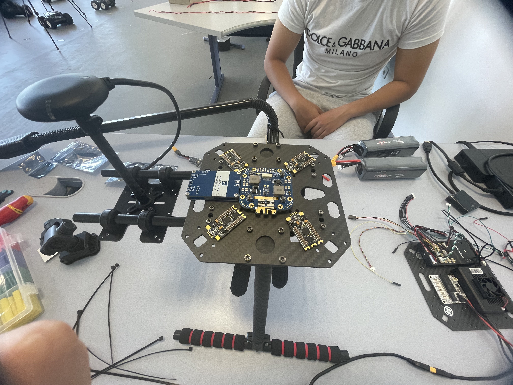
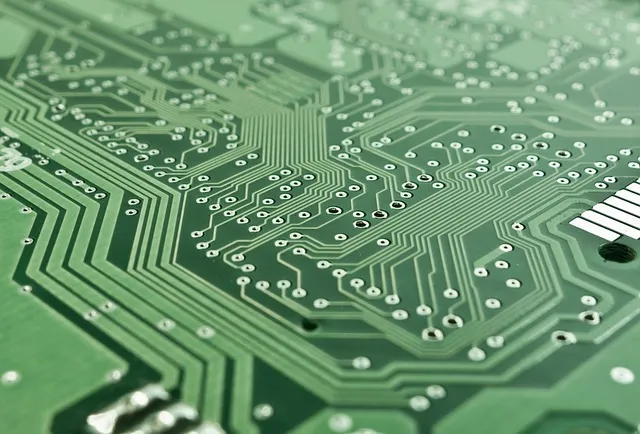

Drone DJI ou drone X500, flux video, photos, GPS et metadonnees.
BUT GEII - parcours ESE
Mohamed Jibril Samahri
Portfolio technique oriente drone, electronique embarquee, architecture d'alimentation et integration IA dans le cadre du projet ARODE.
Cadre du stage
ARODE : detection, analyse et exploitation terrain
Le stage s'inscrit dans le projet ARODE, dont l'objectif est d'exploiter des images de drone pour assister la recherche de victimes. Le systeme combine une chaine de detection, un module d'analyse de type VLM et une interface de supervision Arode Live.
Le drone constitue le coeur de la mission : concevoir une architecture materielle ouverte capable de remplacer une solution DJI commerciale limitee, tout en preparant l'integration d'un traitement embarque sur Jetson.
Detection de personnes ou zones d'interet avant interpretation.
Analyse contextuelle pour aider a qualifier les detections.
Visualisation, suivi terrain, export et solution de secours.
Projet principal
Architecture du drone ARODE
La mission principale porte sur la conception et la mise au point d'un drone quadricoptere base sur un chassis Holybro X500 V2, avec autopilote Pixhawk 6C, liaison SIYI et calcul embarque Jetson Orin Nano.

Holybro X500 V2
Base mecanique du quadricoptere, support des bras, moteurs, ESC, batterie et composants embarques.
Pixhawk 6C
Controleur de vol sous ArduPilot pour la stabilisation, les capteurs et la commande des moteurs.
Jetson Orin Nano
Ordinateur embarque prevu pour executer les traitements IA au plus pres du drone.
SIYI MK32
Liaison de commande et retour video, avec camera SIYI et elements reseau embarques.
Alimentation
Batterie 4S Li-ion, module PM02 V3, distribution FCHUB-12S, BEC 12 V et protections de cablage pour alimenter autopilote, Jetson, camera et reseau.
Materiel
Integration progressive des composants apres reception : controle visuel, montage, cablage, verification de tensions et tests de sous-ensembles.
Objectif
Obtenir une plateforme plus ouverte qu'un drone DJI, capable d'evoluer vers un traitement embarque et une meilleure maitrise technique.
Donnees synthetiques & VLM
Une piste exploree pour enrichir l'entrainement
Une partie du travail a consiste a explorer la generation de donnees synthetiques pour ameliorer l'entrainement ou l'evaluation du VLM. L'idee etait de produire des situations variees autour de scenes de drone, afin d'augmenter la diversite des cas observes.
La demarche a mobilise plusieurs pistes : generation par diffusion, inpainting, segmentation, detourage, augmentation de donnees et essais autour de LoRA. La solution n'a pas abouti en version finale, mais elle a permis d'identifier des limites importantes : coherence visuelle, realisme terrain, cout de generation et qualite des annotations.
FLUX Fill
LaMa
PatchMatch
LoRA
SAM2
BiRefNet
YOLO
DEIMV2
DINOv3
Metadonnees
Ce qui a ete tente
Scripts de generation, tests d'inpainting, remplacement d'elements dans l'image, extraction de masques, evaluation de resultats et organisation de sorties experimentales.
Interet pour ARODE
Produire plus de cas d'entrainement pour aider le VLM a interpreter des situations rares ou difficiles a collecter en conditions reelles.
Limite constatee
La generation seule ne garantit pas des donnees suffisamment realistes, annotees et fiables pour remplacer une acquisition terrain.
Interface & solution de secours
Arode Live et Mavic 2 Pro
En parallele du drone principal, des corrections legeres ont ete effectuees autour d'Arode Live et une solution de secours a ete mise en place avec le DJI Mavic 2 Pro. Cette piste permettait de disposer d'un drone commercial exploitable pendant que la plateforme X500 etait encore en cours d'assemblage.
Le travail concerne surtout l'integration pratique : flux video, GPS, metadonnees, export CSV, affichage d'alarmes, tri des detections et petits correctifs d'interface.
branches observees:
demo_mavic2pro
demo_mavic2pro_interface
traces techniques:
RTSP / video
GPS / metadata
CSV export
badges / alarmes
corrections UICollection BUT 3 ESE
Projets techniques et apprentissages
Le portfolio regroupe les projets lies au parcours Electronique et Systemes Embarques : automatisme, informatique industrielle, robotique, FPGA, regulation et documentation technique.

Stage
Drone ARODE
Conception d'une architecture drone ouverte, tests materiels, integration IA embarquee et solution de secours Mavic 2 Pro.
Lire la sectionVoiture autonome
Projet de robotique mobile : capteurs, logique de decision, deplacement autonome et validation par essais.
Journal de bordRobot suiveur de ligne
Integration capteurs/actionneurs, suivi de trajectoire, tests de comportement et rapport technique.
RapportRegulateur de vitesse
Conception logique, regulation, validation fonctionnelle et exploitation de signaux numeriques.
SAE S3
Developpement logiciel, structuration de code, documentation et presentation technique.
DocumentCompetences demontrees